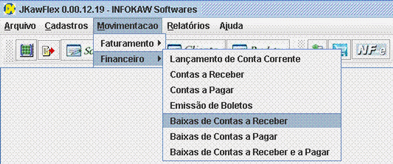
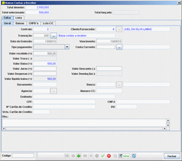
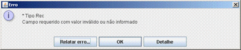

|  |
1. Para BAIXAS DE CONTAS A RECEBER, selecione na barra de Menu a opção
MOVIMENTAÇÃO, em seguida FINANCEIRO, e BAIXAS DE CONTAS A RECEBER. |
![[IMAGE]](images/barrapesquisa.gif) |
2. Selecione o período e o cliente que deseja. |
![[IMAGE]](images/opcaobaixar.gif) |
3. Dê 2(dois) cliques para selecionar as contas a receber desejadas. |
![[IMAGE]](images/barrasalvar.gif) |
4. Logo após, clique no botão VALIDAR REGISTRO CORRENTE, e depois em OK, situados
na barra de opções. |
|  |
5. Preencha os campos da nova janeça que abrirá. |
![[IMAGE]](images/barrasalvar2.gif) |
6.1 Após isso, clique no botão VALIDAR REGISTRO CORRENTE, e em SALVAR, situado na
barra de oções. |
|  |
6.2 aso ao clicar no botão VALIDAR REGISTRO CORRENTE aparecer uma janela de erro com
a mensagem "Campo requerido com valor inválido ou não informado", verifique se o dado informado no
campo mostrado pela mensagem está correto. Após corrigir o erro siga os passos do item 6.1 novamente. |